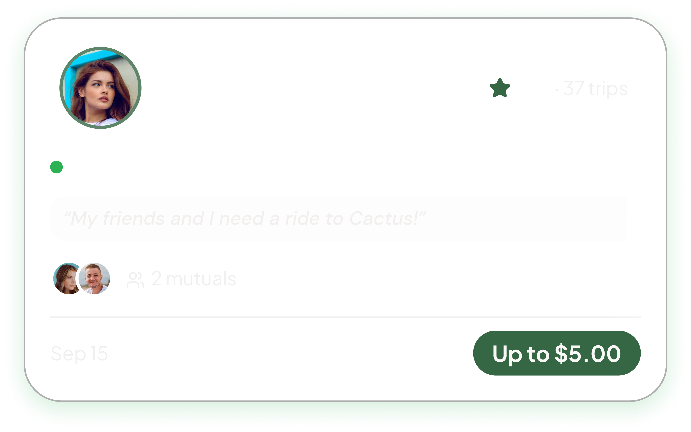
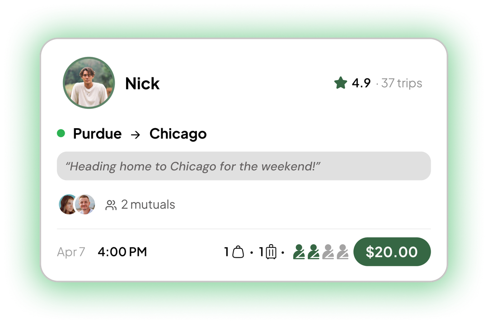
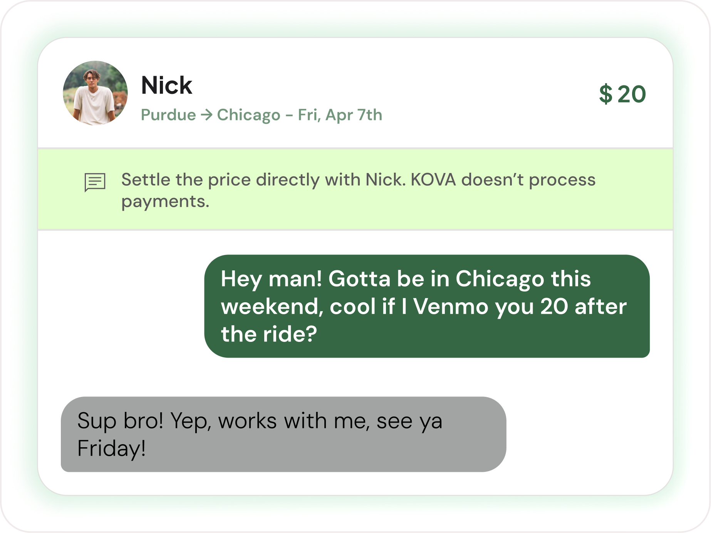
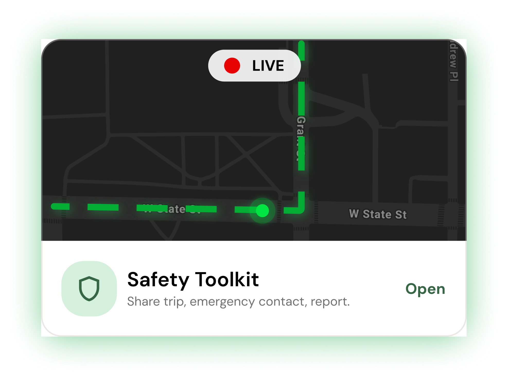
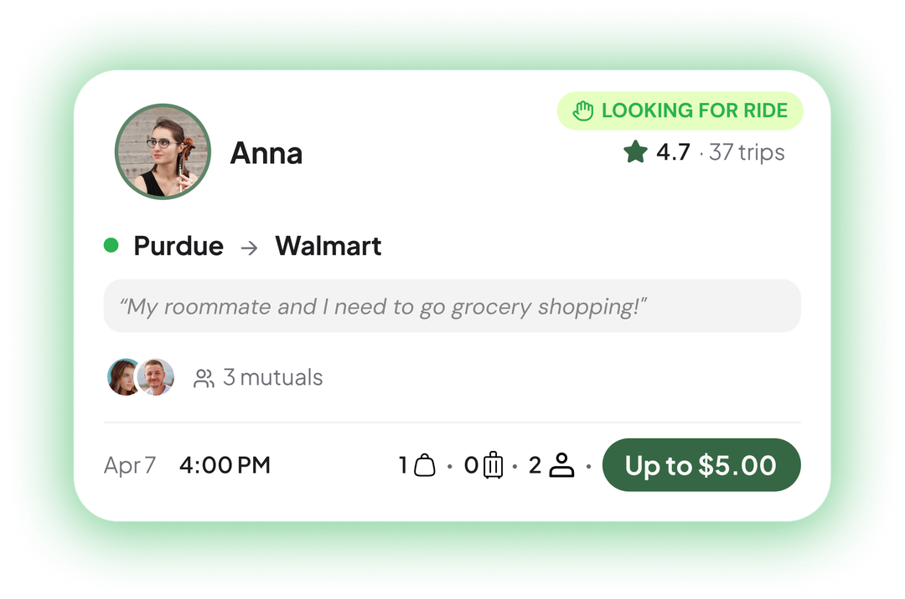
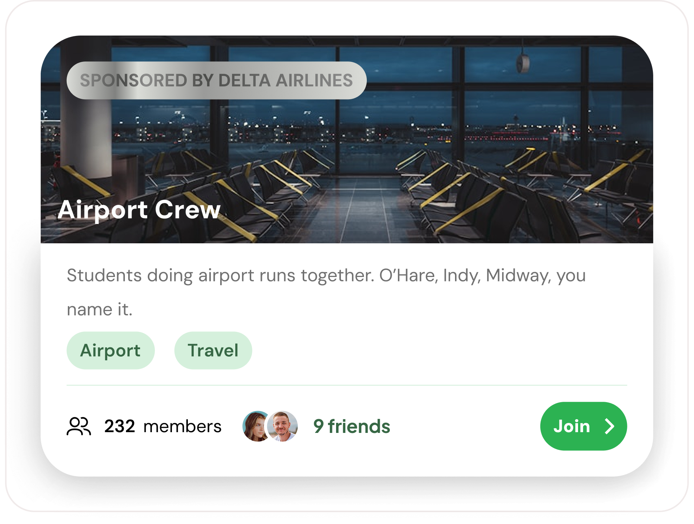
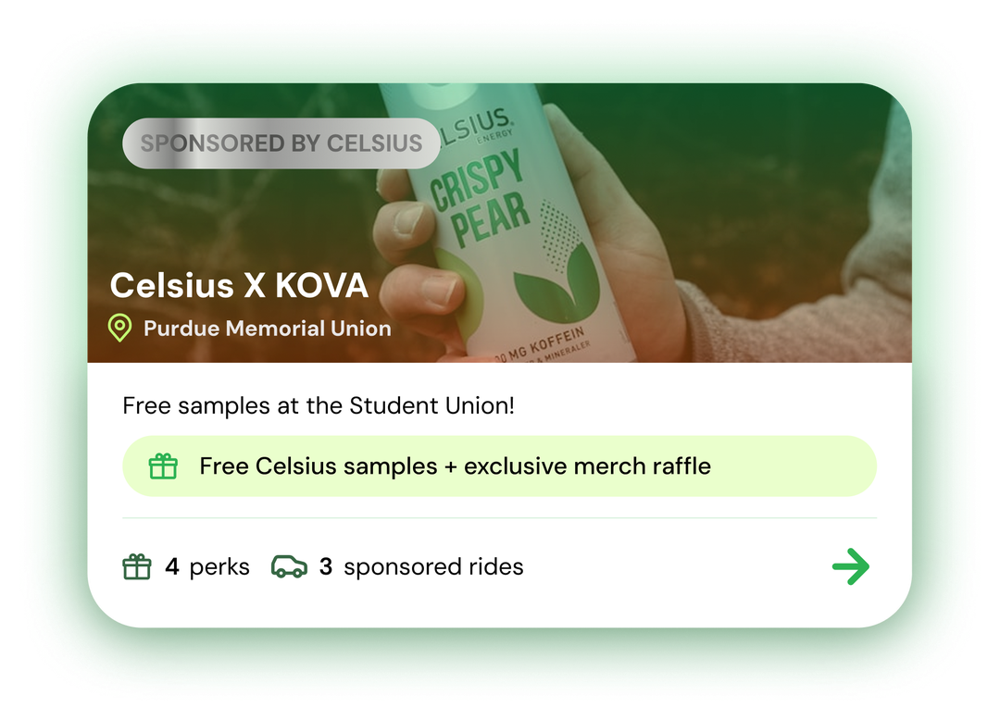
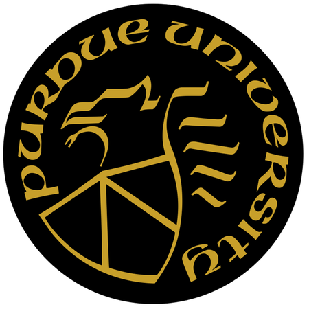
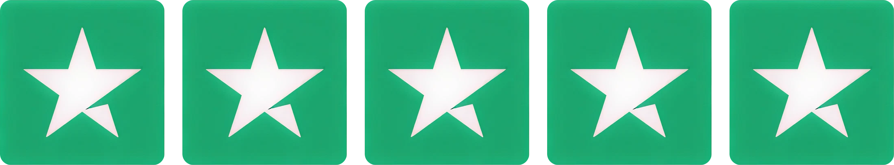

All drivers are Purdue students. No randoms.

Text them, agree on a number, done.

Track the ride in real time.
Was heading home to Chicago for break, threw up a ride last minute. Ended with two passengers I'm still in a groupchat with. Four hours alone would've been rough.
Didn't expect much tbh. Booked a ride to Indy, driver was a CS senior. Left with an internship referral. Didn't have that on my bingo card.
Shared a ride to O'Hare, split it four ways, paid $30. Uber wanted $140.
Used to spam GroupMe every time I drove back to Michigan. KOVA made it way easier. Riders in ten minutes, gas basically covered.
Knowing everyone's a student made a big difference for me. Felt way more comfortable riding with people and talking to them.
Was kind of nervous for my first ride. It wasn't weird at all. Talked the whole way to Columbus, and one of them ended up in my study group the whole semester.
Was heading home to Chicago for break, threw up a ride last minute. Ended with two passengers I'm still in a groupchat with. Four hours alone would've been rough.
Didn't expect much tbh. Booked a ride to Indy, driver was a CS senior. Left with an internship referral. Didn't have that on my bingo card.
Shared a ride to O'Hare, split it four ways, paid $30. Uber wanted $140.
Used to spam GroupMe every time I drove back to Michigan. KOVA made it way easier. Riders in ten minutes, gas basically covered.
Knowing everyone's a student made a big difference for me. Felt way more comfortable riding with people and talking to them.
Was kind of nervous for my first ride. It wasn't weird at all. Talked the whole way to Columbus, and one of them ended up in my study group the whole semester.

Post your route, name your price. Every dollar is yours.

See who else is heading your way.

KOVA partners throw in actual discounts just for riding.

You need a Purdue email to get in. That's it.

Both sides rate every trip. Your rep goes with you.
Photo, rating, trip history. All there before you say yes.
Already talking about it? Make it official. You grow it on campus, we handle the rest.